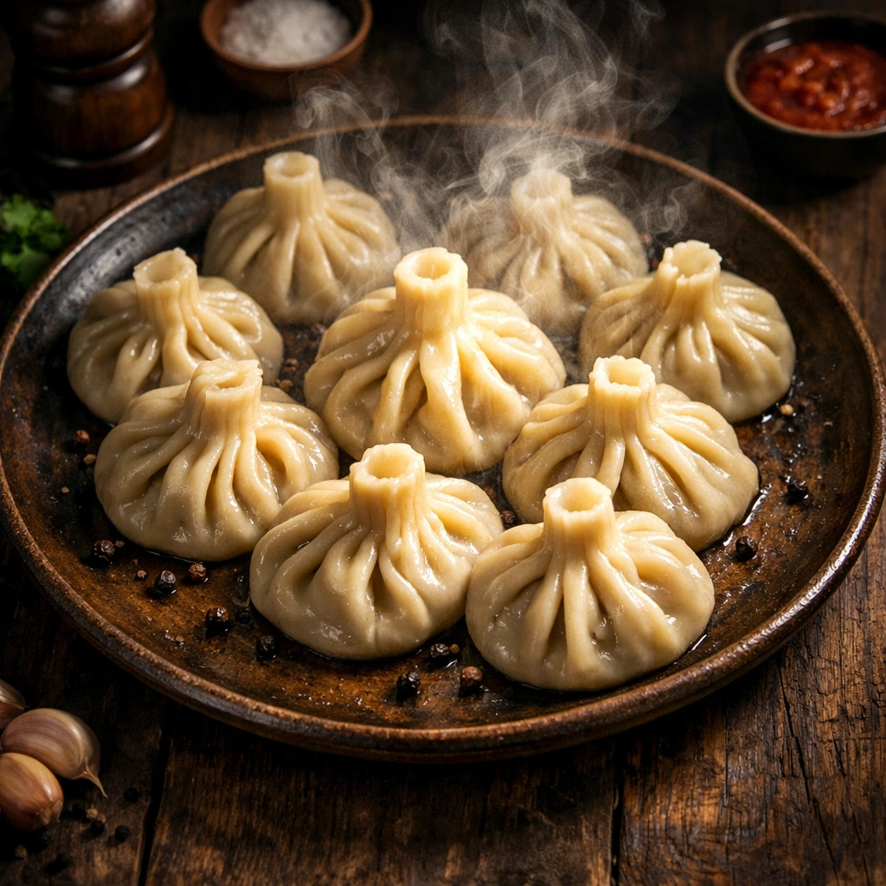

GEORGISCHE-TEIGTASCHEN-KHINKALI
Georgische Teigtaschen "Khinkali"schmecken das ganze Jahr über,
sind aber besonders perfekt für die kalte Jahreszeit im Herbst und Winter.

Als Hauptspeise: Reicht für 2 bis 3 Personen
Für den Teig:
| 500 |
g |
Weizenmehl |
| 250 |
ml |
Wasser (kalt) |
| 1 |
TL |
Salz |
Für die Füllung:
| 300 |
g |
Rinderhackfleisch |
| 200 |
g |
Schweinehackfleisch |
| 1 |
große |
Zwiebel |
| 2 |
Zehen |
Knoblauch (gepresst) |
| 1 |
Bund |
Koriander (frisch, fein gehackt) |
| ca.150-200 |
ml |
eiskaltes Wasser |
| 1 |
TL |
Salz und reichlich schwarzer Pfeffer |
Zubereitung:
Teig:
- Mehl, Wasser und Salz vermischen.
- Alles zu einem glatten Teig kneten.
- Den Teig kurz ruhen lassen.
- Den Teig ausrollen und Kreise ausschneiden.
Füllung:
- Rinderhackfleisch und Schweinehackfleisch vermischen.
- Zwiebel und Knoblauch hinzufügen.
- Koriander, Salz und Pfeffer dazugeben.
- 150-200 ml kaltes Wasser langsam hinzufügen.
- Alles gut vermischen.
- Die Füllung auf die Teigkreise geben.
- Die Teigränder zusammenfalten und Khinkali formen.
ÄNLICHE REZEPTE